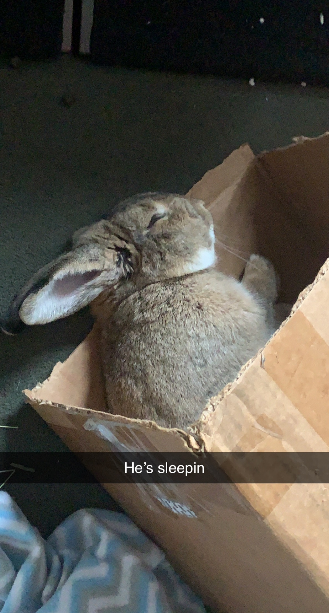

The Worst Ranked Day in a Long Time
Evan HampToday was one of the worst Ranked sessions I've played in the past 5 years in any video game. I had 1 win and 4 losses. Now that doesn't seem so bad, until you realize that I lost over 85 ranking points, and demoted to a rank below. The only game I won, There was a guy on my team that did really well. 30 kills, and basically carried the game for the whole team, so it wasn't a very satisfying win. The loses on the other hand, were excrutiating. My support's went a combined 0 kills and 25 deaths. So they were no help at all, and I almost felt helpless in a lot of my games, and thats no fun either. After that I took a break to calm down, because i was getting a little too upset at a game that is supposed to be fun. So i went upstairs to play with my bunny and I found him sleeping, and it flipped my mood immediatly.
| My Champ | My KDA (Kills/Deaths/Assists) | Supports Champ | Supports KDA |
|---|---|---|---|
| Tristana | 2/5/0 | Lux | 0/8/2 |
| Ezreal | 4/2/4 | Yummi | 0/7/0 |
| Ezreal | 3/7/6 | Swain | 0/10/5 |
